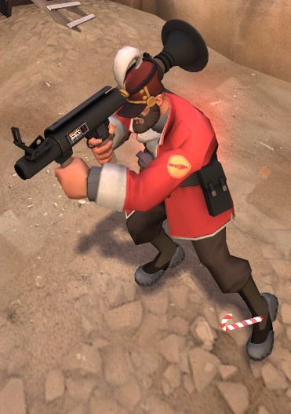

Welcome! I'm Joshua, and I'm currently an 8th grader at Takoma Park Middle School in Silver Spring, Maryland. I'm interested in a lot of things, but my favorite are programming, electrical engineering, and hockey. I enjoy watching anime and cooking in my spare time. In addition, at school I have participated in 2 years of ACSL (American Computer Science League) and have made it past the first rounds of Science Bowl tryouts.
You can find me online with the following handles:
 : JoshDaBosh
: JoshDaBosh
 : jwanggt@gmail.com
: jwanggt@gmail.com
 Besides work and sports, I also like to play Team Fortress 2. I edit videos for it and play in both competitive and casual matches. As of right now, I'm a substitute Spy class player for the Teuton Croutons, a UGC Steel Highlander team. Finally, you can also see some of the projects and other contributions that I've made here. For example, I've created this site completely from scratch, made a working jokes forum for Takoma Park MS, and made a multi-threaded image scraper.